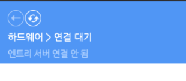

웹 환경 연결 문제 해결 3단계
1
하드웨어 연결 프로그램 업데이트 가장 유력
최근 엔트리 보안 인증서가 갱신되면서 구버전(1.9.39 이하)을 사용하면 브라우저가 통신을 보안 위험으로 간주해 블록을 차단합니다.
- 현재 켜진 엔트리 하드웨어 프로그램을 **완전히 종료**합니다.
- 엔트리 홈페이지 [다운로드] 탭에서 **최신 버전**을 새로 받아 덮어쓰기 설치합니다.
- 확인: 설치 후 버전이 1.9.40 이상인지 확인하세요.
2
브라우저 새로고침 및 상태 확인
하드웨어 프로그램 우측 상단에 '엔트리 서버 연결 안 됨'이라 뜬다면 브라우저가 하드웨어를 인식하지 못한 것입니다.

- 가급적 **구글 크롬(Chrome)** 브라우저를 사용해 주세요.
- 매우 중요: 웹 브라우저용 엔트리와 오프라인 설치형 엔트리를 **동시에 켜두면 신호가 충돌**합니다. 둘 중 하나는 무조건 완전히 꺼주세요.